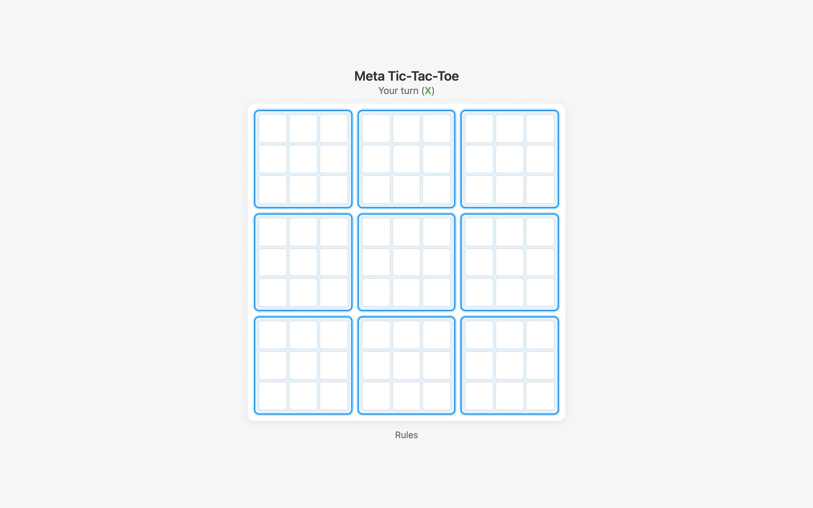

Ultimate tic-tac-toe takes a game that's been solved since childhood and makes it genuinely hard. The board is a 3x3 grid of smaller tic-tac-toe boards. To win, you need to claim three sub-boards in a row. But the twist is what makes it interesting: the cell you play in determines which sub-board your opponent must play in next. Pick the top-right cell of any sub-board, and your opponent is forced to play in the top-right sub-board. This constraint turns a game of local tactics into one of global strategy. Every move has consequences two layers deep.

{kind=link}
When you're sent to a sub-board that's already been won or filled, you get a free choice of any open sub-board. This rule prevents deadlocks and creates moments of sudden strategic opportunity. Sending your opponent to a completed board gives them freedom, which is usually bad for you.
The AI
The opponent uses minimax with alpha-beta pruning, searching three plies deep. Three plies doesn't sound like much, but the branching factor in ultimate tic-tac-toe is large. When you're constrained to a single sub-board, there are up to nine possible moves. When you have free choice, there can be dozens of legal moves spread across multiple sub-boards. Alpha-beta pruning cuts branches where the best possible outcome for one player is already worse than a previously found alternative, which keeps the search tractable.
The evaluation function scores board states at the leaves of the search tree. It calls evaluate_global(), which examines the meta-board (which sub-boards have been won by whom) and returns a numeric score. Positive values favor the maximizing player; negative values favor the minimizer. The function considers not just which sub-boards are won but how close each player is to completing a row of three at the meta level.
The Rust code is organized into separate modules for types, individual board logic, game state management, and the minimax search itself. types.rs defines the cell states and move structures. board.rs handles the 3x3 sub-board logic, including win detection. game.rs manages the full 9-board state and enforces the "your move picks their board" constraint. minimax.rs contains the search algorithm.

{kind=link}
Rust to WebAssembly
The AI is written in Rust and compiled to WebAssembly. The frontend is plain JavaScript and CSS. When you make a move, JavaScript sends the game state to the WASM module, which runs the minimax search and returns the AI's chosen move. On a modern machine this takes well under a second, even at depth three.
The game state is serialized between JavaScript and Rust using Serde via wasm-bindgen. Each call passes the full board state rather than maintaining mutable state inside the WASM module. This makes the interface stateless from the Rust side, which simplifies debugging and means the JavaScript frontend is the single source of truth for the game.
Playing it
The game highlights which sub-board you're allowed to play in. If you have a free choice, all open boards are highlighted. Won sub-boards display the winner's mark scaled up to fill the entire sub-board, making the meta-level game state easy to read at a glance. The UI shows a rules modal for anyone unfamiliar with the variant.
The AI is beatable, but it doesn't make obvious mistakes. It will punish you for sending it to a completed board unnecessarily and it has a good sense of when to sacrifice a sub-board to gain positional advantage at the meta level. Depth three is enough to see most tactical traps coming.